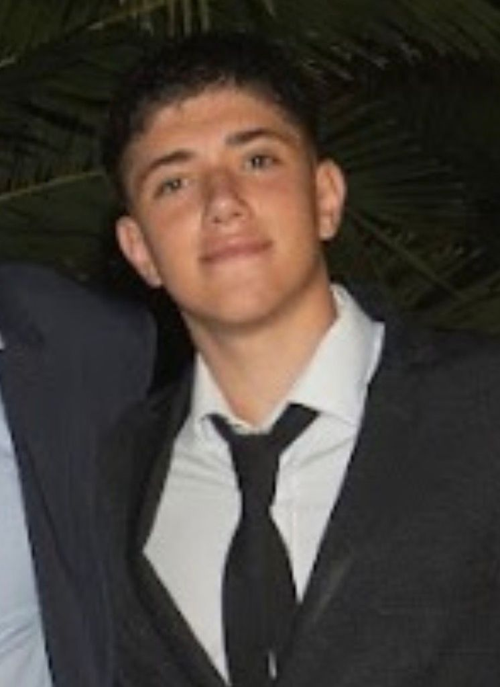

Nuestro equipo

Matias Ramos

Estudiante 3ro año de marketing

Francisco Csik
Data Analyst
UADE
Trabajé como analista de datos para diferentes empresas y rubros. Utilicé diversas tecnologías como PowerBi, Python y SQL.

Juan Damiano
Desarrollo Back-End
Administrador de sistemas con experiencia en uso y mantenimiento de aplicaciones como Blackline - Excel - PowerBi.

Marcos Said
Data Analyst
Soy Marcos, Analytics Engineer, con experiencia en modelado de datos, ingeniería analítica y análisis de datos. Trabaje en proyectos de bases de datos para comercializar con los bancos.

Nasser El Bacha
FullStack y Soporte IT
Soy Nasser El Bacha, desarrollador especializado en blockchain con tecnologías como Solidity y desarrollo web utilizando Node.js, React y Angular. Tengo experiencia en la implementación de soluciones.